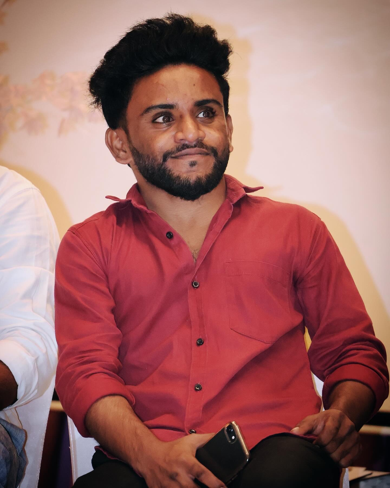

Hello! I'm Kiran Lutukurthi, a motivated and adaptable individual recently completed my B.tech in the stream of Computer Science and Engineering at Geethanjali Institute of Science and Technology. With a solid foundation in HTML, CSS, Python, and SQL, I enjoy applying my skills to real-world projects and have completed an internship as a Python Full Stack Developer, where I built web applications using HTML and CSS collaborated in a team setting.
I am passionate about technology and constantly seek to improve my knowledge through hands-on experience and continuous learning. I've worked on academic and personal projects such as a website promoting awareness on alcohol and smoking, and a comparative study on battery state-of-charge estimation.My strengths include flexibility, multitasking, and a keen interest in Data Analyst and emerging tech.